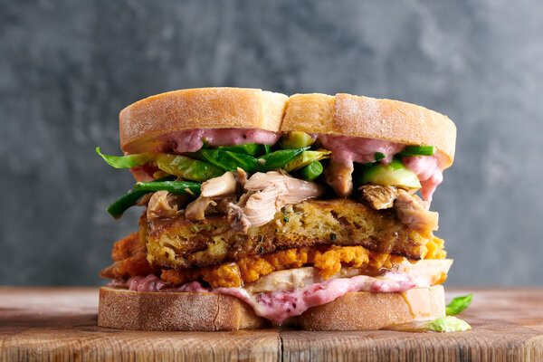

Boxing Day sandwich

No one will admit it, but this is significantly more exciting than the actual Christmas dinner.
Ingredients
- A sandwichful of leftover turkey
- A handful of leftover stuffing
- Two slices of good, thick white bread
- A big slice of brie
- 1 tbsp mayonnaise
- A splash of your hot sauce of choice
- 1 tbsp Cranberry sauce
- Salt and pepper
Steps
- Preheat the grill to 200C. Season the turkey with salt and pepper if needed.
- Mix mayonnaise and hot sauce.
- Assemble the sandwich minus the top piece of bread: bread, mayo, cranberry sauce, turkey, stuffing, brie.
- Place under the grill until the brie has melted over everything. When nearly ready, toast the other piece of bread.
- Add the other piece of bread to complete the sandwich. Eat. Possibly cry.